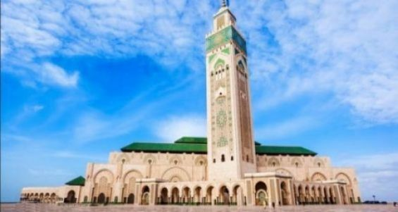

Les lieux incontournable
Place Jemaa el-Fna
Jardin Majorelle
Palais de la Bahia

Koutoubia Marrakech
Mosquée Hassan-II

Cascades d'Ouzoud
Tour Hassan

Rivière de Toudgha
Kasbah des Oudayas
Erg Chebbi
Marché

Zankat L'oued
Adresse -> 65 rue massmada khemisset
17h-00h Jour d'ouverture -> 7j/7

khiyala
Adresse -> Route de Tiflet Horaires
-> 13h-23h Jour d'ouverture -> 25 Janvier 2021
Actualités

Le Maroc et la RD Congo font match nul (1-1)
Le Maroc et la Mauritanie font match nul (0-0)
Abdeslam Ouaddou nouvel entraîneur du Mouloudia d'Oujda
Des artistes marocains participent à une exposition de la Saison Africa 2020
